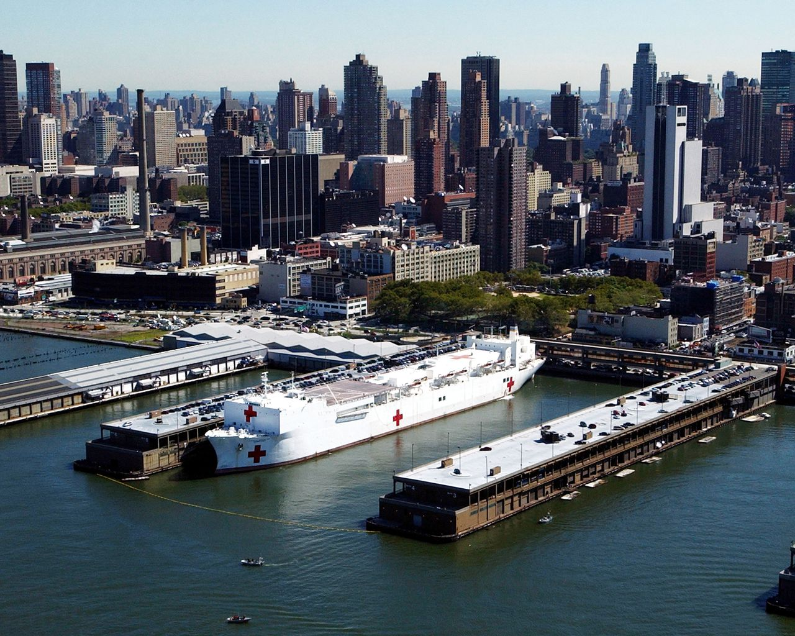

US Comfort and US Mercy Sent to New York and LA to Increase Hospital Capacity
Story by: GreyLight Media
Date: 03-30-2020

US Mercy docked in Manhattan after the September 11, 2001 terrorist attacks
The two US Navy Hospital ships “USNS Comfort” and “USNS Mercy” have been deployed to Manhattan and San Diego to increase hospital capacity amidst the COVID-19 pandemic. The ships will be used to treat patients who are not infected with COVID-19, in order to free beds in land-based hospitals to treat COVID-19 patients while keeping the groups separate. During the departure of the US Comfort from Norfolk, Virginia,
President Trump made statements.
"This great ship behind me is a 70,000-ton message of hope and solidarity to the incredible people of New York, a place I know very well, a place I love.”
"As the USNS Comfort weighs anchor and leaves Norfolk Naval Station, home to the most powerful fleet in the world, she does so to embark on one of the most important assignments of her storied career—serving the American people in this great hour of need," the White House statement said.
More than 1,200 medical personnel working the ship "will bring to bear the skills, care, and compassion needed to wage this fight against an invisible enemy," the White House said in a statement.
"These doctors, nurses, anesthesiologists, x-ray technicians, orderlies, and other medical staff will augment and support New York City’s medical community and conserve hospital capacity by treating some non-COVID-19 patients aboard the USNS Comfort," the White House said.
The USNS Comfort had been undergoing planned maintenance, but was rushed back into service to aid NYC which is now the epicenter of the nation's outbreak. It is scheduled to arrive in Manhattan a week after its sister ship, the USNS Mercy arrived in Los Angeles to support efforts on the West Coast.
The nearly 900-foot-long USNS Comfort, which was once an oil tanker, is a floating trauma hospital designed to care for service members who've been in combat.
The ship has 12 operating rooms as well as radiology suites and a CT scanner. It also has ICU beds, a lab and a pharmacy
Speaking with New York Governor Andrew Cuomo Saturday morning, Trump talked about the response and also approved his request for four additional medical response sites in Brooklyn, Queens, Staten Island and the Bronx that will have 4,000 additional beds, Cuomo said earlier. The USNS Comfort should arrive in New York Harbor on March 30th with roughly 1,000 beds.
"We are marshalling the full power of the American nation — economic, scientific, medical and military — to vanquish the virus," Trump said at today's departure ceremony. "I'm here to express my profound gratitude to the dedicated service members who will soon be on the front lines of this fight."
Mark Esper, The Defense Secretary said the department is focused on three priorities. "We are committed to taking all necessary measures to safeguard the well-being of our most important resource: our people," the secretary said.
The second priority is remaining prepared to carry out core national security missions and to defend the United States against any threat.
Third, he said, DOD is "continuing to support President Trump's whole-of-government, whole-of-nation response to the coronavirus."
"For several weeks, the Department of Defense has been surging personnel, capabilities and equipment to help slow the spread of the virus," Esper said. "Thousands of National Guard troops are mobilized."
US officials and US Companies work to fix the current shortage of N95 masks
Story by: GreyLight Media
Date: 03-27-2020
Highly sought after N95 respirators
The Covid-19 pandemic, which experts believe originated in Wuhan, China during the late part of 2019 is presenting many difficulties for the world. One of the top challenges is overcoming the stress on supply chains that provide personal protective equipment (PPE) to healthcare professionals. When it comes to a respiratory disease that can be spread by airborne droplets (such as Covid-19), N95 respirators become a crucial piece of gear to protect health care workers and anyone else who would come into contact with someone infected by the novel coronavirus.
Since the start of the pandemic in China, the usage of N95 masks has steadily risen. China produces around half of the N95 masks in the world, when their crisis started there was no hesitation to stop exports of the much needed N95 masks. The subsequent large-scale outbreaks in South Korea, many European countries and finally here in the USA has led to somewhat of a breaking point. Adding to the medical demand, the fear of the pandemic has caused many average citizens to react by hording the sought after N95 masks.
To rectify this crisis-within-a-crisis, many individuals are acting quickly to plan and implement strategies to both increase the supply and decrease the demand of N95 masks. Government officials at all levels, N95 manufacturers and suppliers, large industrial companies and various organizations along with individual citizens are working together to get hospitals and testing facilities what they need.
To decrease the demand there are a few strategies, some are brilliant and others are unfortunate but necessary measures to buy time for the supply to increase. On March 18th, The Centers for Medicare and Medicaid Services (CMS) headed by Seema Verma, released recommendations that call for doctors and hospitals to postpone “non-essential, elective” medical and surgical procedures, including dental procedures. The request has been supported by the American College of Surgeons, The American Medical Association and the American Dental Association. These recommendations appear to have answered the call from Jerome Adams, who is the Surgeon General currently serving under President Trump. Verma and Adams are both members of the White House task force dedicated to fighting the coronavirus.
In many hospitals they are currently rationing the masks to their staff, this includes doctors, nurses, aides and the support staff that keeps the hospital up and running. This method will save masks in the short term but also leaves those in contact with infected patients at a higher risk for contracting the virus themselves. The most promising method for reducing the need of masks is a new style of test that’s being developed to detect Covid-19. The test that’s being developed by United Health Group would eliminate the need for a professional to get a sample from the patient and of course this would also eliminate the need for a new N95 mask to be used for every sample collected. To make the most of the resources currently available, Duke Health says it will decontaminate and reuse the masks. Duke will use vaporized hydrogen peroxide to treat N95 masks at its three hospitals in Durham and Raleigh. The gas permeates the masks to kill germs, including viruses, without harming the material, Duke says.
In regards to increasing the supply of masks, these are some of the avenues currently being pursued. Honeywell is increasing production of N95 masks and may hire 500 workers to help meet the new demand. In order to scale up quickly, they are seeking a loan of nearly $5 billion.. 3M (who is a major manufacturer of the N95 mask) has plans to produce 1 billion masks by the end of the year. Due to the Australian wildfires earlier this year, 3M had already begun increasing their production capacity. The huge cost to Australia may have been a helpful head start for the efforts that are now in place. Looking back to another crisis, the SARS outbreak in 2002-2003, the company set in place plans to initiate a plan for “surge capacity” in their factories cross the globe, should they need to confront a future crisis, such as the one we’re living in now. Large companies like Facebook, Apple, and Goldman Sachs donated masks to help fill the supply gap during the coronavirus outbreak, several news agencies reported.